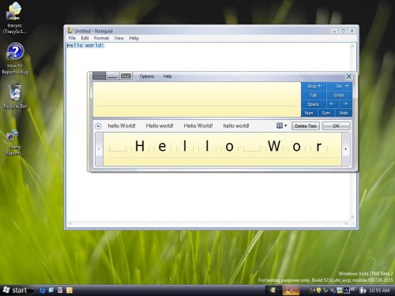

Microsoft Tablet PC Input Panel is a powerful tool for entering handwritten text with a pen and correcting text without the use of a keyboard. When using Input Panel, a user enters text by handwriting onto Input Panel's inking surfaces, which causes Input Panel to recognize the user's handwriting as text. Once the text has been recognized, the user taps Insert on Input Panel to insert the text into an application or document. Prior to inserting the text, a user has access to a set of correction tools in Input Panel. These include the selection of an alternative recognition result, the ability to rewrite a single character, or even to scratch-out the entire word and rewrite. These correction tools enable a user to correct both recognition errors and human errors.
Once the text entered using Input Panel is in the document, users have access to the same correction functionality that is available prior to insertion in Windows Text Services Framework-based and Text Services-enabled applications. Starting in Microsoft Windows XP Service Pack 2 Tablet PC Edition all Rich Edit applications are Text Services-enabled by default, and starting in Windows Vista, HTML applications are Text Services-enabled by default. In-document correction is only available in Text Service based and enabled applications; this is because Input Panel is dependent on Text Service's capability to store associated text properties, including ink objects and recognition alternates, in order to provide in-document correction.

There are, however, numerous scenarios, including correcting speech recognition or correcting typed text on the go, that do not start with text entry using Input Panel but in which in-document correction can be extremely useful for Tablet PC users. A prime example is in applications that provide custom inking surfaces for entering text using a pen. Custom inking surfaces are a great way for applications to provide uniquely tailored functionality specific to the text entry tasks of each application. Additionally, custom inking surfaces provide a fully integrated Tablet PC user experience, which makes it clear the pen is a first class input device in applications that contain them. However, applications that provide custom inking surfaces may not allow or may not be able to provide the same level of correction support that is available from Input Panel in-document correction.
Text Services based or enabled applications in which in-document correction is useful for correction of text not entered using Input Panel are able to use Input Panel's IHandWrittenTextInsertion API (Microsoft.TextInput.HandwrittenTextInsertion class in managed code)to enable in-document correction for text entered by other means. In this way, applications can cheaply add powerful correction support to their custom inking surfaces or other text entry scenarios, and round out their Tablet PC text entry story. The Input Panel IHandWrittenTextInsertion API is included as part of the Windows Vista operating system and as part of the Tablet Platform SDK version 1.9 or newer. Both a .NET and COM based version of the API are included. Enabling in-document correction for text not entered using Input Panel is supported on Windows Vista and newer. In-document correction is only available for Latin languages and is unable to display any character outside the Latin character set.
The required changes to an application in order to integrate Input Panel in-document correction for text not entered using Input Panel and using the IHandWrittenTextInsertion API are straightforward. All of the application's custom text entry code remains unchanged except for the last step. At the point at which text entered using a custom inking surface, speech recognition, or other means is to be displayed in a text services enabled text field, the application sends the text to the IHandWrittenTextInsertion interface instead of sending it directly to the text field. The Input Panel programmability component then handles inserting the text into both the text field and the Text Services backing-store. When adding the text to the Text Services backing-store, the Input Panel programmability component handles setting the text properties that are required by Input Panel for in-document correction to be enabled for that text.
The following section walks through this process in detail for a C++ application using the COM version of the IHandWrittenTextInsertion API. There are notes anywhere the steps for using the .NET Framework version of the API in C# differ for the using COM version in C++. The managed HandwrittenTextInsertion API includes a single COM interface, IHandwrittenTextInsertion. The definition for this interface is located in PenInputPanel.h and PenInputPanel_i.c.
First, the application should use the CoCreateInstance function to produce an instance of IHandWrittenTextInsertion with class id CLSID_HandwrittenTextInsertion. Note that the creation of a CLSID_HandwrittenTextInsertion object will succeed only after a window is created and given focus, because until then the Text Services backing-store is not activated. Additionally, if tiptsf.dll is not present on the system, the CoCreateInstance function fails and returns REGDB_E_CLASSNOTREG, indicating that Input Panel in-document correction is not supported on the system. At this point the application should proceed without trying to enable Input Panel in-document correction. The instance of HandwrittenTextInsertion must be accessible from the application's code that handles inserting text into a text field.
[!Note]
When working with the .NET Framework version of the API, the application should add a using statement to allow access to the Microsoft.Ink.TextInput namespace and then create the object directly.
Â
Second, the application's code that is responsible for inserting text into a text field must be altered so that it no longer inserts text into a text field directly, but calls one or the other of IHandwrittenTextInsertion's two insertion methods instead. Whether the applications should choose to call InsertRecognitionResultsArray or InsertRecognitionResults depends on whether the application has the recognition alternates for the text stored as an array or as an IInkRecognitionResult object.
[!Note]
When working in managed code, the corresponding recognition object consumed by InsertRecognitionResultsArray is RecognitionResult. Both methods consume the following three parameters:
Â
Input Panel's programmability model is able to insert the text in the document or application from the position of the system caret.
Both methods return S_OK if the insertion succeeds. They return E_NOINTERFACE if the application is not Text Services based or enabled, and E_INVALIDARG if alternates is improperly formatted or inaccessible. They may also return E_OUTOFMEMORY if there is not enough memory available on the system, or E_FAIL after a catastrophic failure such as the Text Services Framework not being enabled.
Enabling Input Panel in-document correction for text not entered using Input Panel is a cheap and easy way for a Text Services based or enabled application to supplement a custom inking or input method with powerful pen-based correction functionality. On Windows Vista, all Rich Edit and Trident applications are Text Services enabled. While integrated inking surfaces are a great option for adding a custom Tablet PC user experience to an application, they only support half of text entry if they do not include correction capabilities. In-document correction provides users with the other half of the story by adding the ability to swap a selection for a recognition alternate, or to rewrite part or all of the selection.
Programming the Text Input Panel
Â
Â